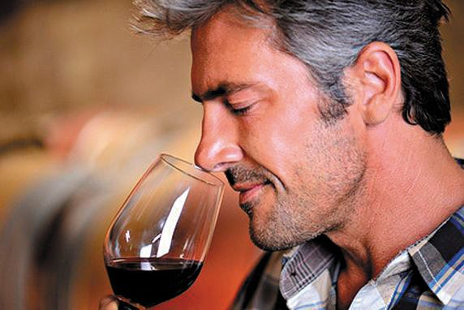

Book a Table at our Restarunt
Learn About or Our Vineyards

Wine Man
“Enim quo nobis itaque reprehenderit mollitia voluptatum ad distinctio. Eum impedit necessitatibus hic rerum et possimus omnis.”
“Enim quo nobis itaque reprehenderit mollitia voluptatum ad distinctio. Eum impedit necessitatibus hic rerum et possimus omnis.”